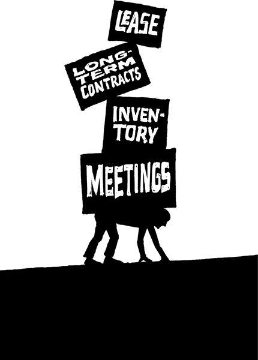

{% include JB/setup %}
{% raw %}
<div>

<h2 id="filepos71232" class="calibre19"><span class="calibre2"><a class="calibre13"></a><strong class="calibre14">Building to flip is building to flop</strong></span></h2><div class="calibre4"></div>
<p class="calibre7">Another thing you hear a lot: "What's your exit strategy?" You hear it even when you're just beginning. What is it with people who can't even start building something without knowing how they're going to leave it? What's the hurry? Your priorities are out of whack if you're thinking about getting out before you even dive in.</p>
<p class="calibre17">Would you go into a relationship planning the breakup? Would you write the prenup on a first date? Would you meet with a divorce lawyer the morning of your wedding? That would be ridiculous, right?</p>
<p class="calibre17">You need a commitment strategy, not an exit strategy. You should be thinking about how to make your project grow and succeed, not how you're going to jump ship. If your whole strategy is based on leaving, chances are you won't get far in the first place.</p>
<p class="calibre17">You see so many aspiring businesspeople pinning their hopes on selling out. But the odds of getting acquired are so tiny. There's only a slim chance that some big suitor will come along and make it all worthwhile. Maybe 1 in 1,000? Or 1 in 10,000?</p>
<p class="calibre17">Plus, when you build a company with the intention of being acquired, you emphasize the wrong things. Instead of focusing on getting customers to love you, you worry about who's going to buy you. That's the wrong thing to obsess over.</p>
<p class="calibre17"><a class="calibre16"></a>And let's say you ignore this advice and do pull off a flip. You build your business, sell it, and get a nice payday. Then what? Move to an island and sip pina coladas all day? Will that really satisfy you? Will money alone truly make you happy? Are you sure you'll like that more than running a business you actually enjoy and believe in?</p>
<p class="calibre17">That's why you often hear about business owners who sell out, retire for six months, and then get back in the game. They miss the thing they gave away. And usually, they're back with a business that isn't nearly as good as their first.</p>
<p class="calibre17">Don't be that guy. If you do manage to get a good thing going, keep it going. Good things don't come around that often. Don't let your business be the one that got away.</p>
<p class="calibre3"><a class="calibre16"></a></p><div class="calibre4"></div>
</div>

{% endraw %}

